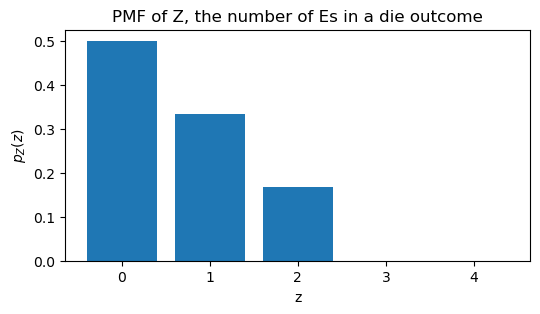
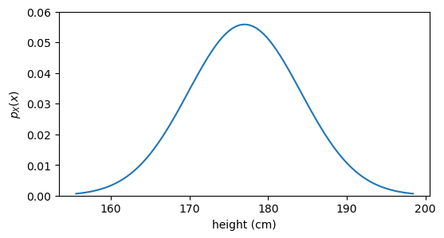

3 the language of random variables
3.1 die rolling
Let’s base this discussion on the most basic example, one that everyone is familiar with. My goal here is to introduce different concepts and notation related to random variables. It is often the case that confusion in complex topics arises from a lack of clarity in the basic concepts.
Say that I have a regular die, and I roll it.
3.2 sample space
What are the possible outcomes of the die roll?
\Omega = \{1, 2, 3, 4, 5, 6\}
We call \Omega (omega) the sample space, it answers the question above. That’s it.
In more general terms, the sample space is the set of all possible outcomes of an experiment.
3.3 support
Let’s say that I’m interested in three things about the die roll:
- The number that came up on the die.
- Whether the number is even or odd.
- The number of times the letter “E” appears in the English word for the number that came up on the die.
Because I’m lazy, I’ll give a symbol to each of these things:
- X = the number that came up on the die.
- Y = whether the number is even or odd.
- Z = the number of times the letter “E” appears in the English word for the number that came up on the die.
Let’s start with Y. What are the possible values of Y? It can be either “even” or “odd”. So we can write:
Y \in \{\text{even}, \text{odd}\}
We call \{ \text{even}, \text{odd} \} the support of Y. That’s just a name. No big deal. It’s the answer to the question “what are the possible values of Y?”.
A more precise statement would be “what are the possible values of Y that have non-zero probability?” But for now, let’s keep it simple.
What’s the support of X? It’s \{1, 2, 3, 4, 5, 6\}. Easy.
What’s the support of Z? It’s \{0, 1, 2\}, because the English words for the numbers 1 to 6 are one, two, three, four, five, six, and they contain 0, 1, or 2 “E”s.
There is no universally standardized symbol for support, but the common notation is \operatorname{supp}(X).
3.4 random variable
Now that we know about the sample space and the support, we can start talking about how X, Y, and Z connect these two ideas. Let’s start with Y.
Y:\qquad \begin{matrix} 1 &\longrightarrow & \text{odd} \\ 2 &\longrightarrow & \text{even} \\ 3 &\longrightarrow & \text{odd} \\ 4 &\longrightarrow & \text{even} \\ 5 &\longrightarrow & \text{odd} \\ 6 &\longrightarrow & \text{even} \\ \end{matrix}
Remember, Y means “whether the number is even or odd”. What we wrote above is how we get the answer to that question. We take the number that came up on the die, and we map it to either “even” or “odd”.
A random variable is a function that maps outcomes in the sample space to values in the support. In mathematical notation, we write:
Y: \Omega \to \operatorname{supp}(Y)
Saying that Z is a random variable means that Z is the function that maps each outcome in the sample space to the number of “E”s in the word for that number. Explicitly, the random variable Z is defined as:
Z:\qquad \begin{matrix} 1 &\longrightarrow & 1 \\ 2 &\longrightarrow & 0 \\ 3 &\longrightarrow & 2 \\ 4 &\longrightarrow & 0 \\ 5 &\longrightarrow & 1 \\ 6 &\longrightarrow & 0 \\ \end{matrix}
Finally, let’s spell out the random variable X for completeness:
X:\qquad \begin{matrix} 1 &\longrightarrow & 1 \\ 2 &\longrightarrow & 2 \\ 3 &\longrightarrow & 3 \\ 4 &\longrightarrow & 4 \\ 5 &\longrightarrow & 5 \\ 6 &\longrightarrow & 6 \\ \end{matrix}
I didn’t start with X because the rule above is so trivial that one might ask what’s the point of defining it as a random variable, if the element in the sample space is the same as the element in the support. The examples for Y and Z show the difference between sample space and support in a way that X doesn’t.
What’s random about a random variable? The functions we saw above are deterministic. If we know the outcome of the die roll, we can determine the value of X, Y and Z with certainty. The randomness comes from the fact that we don’t know the outcome of the die roll in advance, the input to the function is random.
3.5 realization and probability of an event
What is the probability that we get an even number on the die roll (assuming a fair die)? In mathematical language, we can write this as:
P(Y = \text{even}) = \frac{1}{2}
The capital P stands for probability of an event. The event is what we write inside the parentheses, Y = \text{even}.
Sometimes, instead of writing a specific value for Y, we write a general realization of Y, which we denote as y. In that case, we write P(Y=y). Let me give you an example of how to use this notation.
\sum_{y \in \operatorname{supp}(Y)} P(Y=y) = P(Y=\text{even}) + P(Y=\text{odd}) = 1
Let’s translate that into words. We are summing over all possible values of Y (its support, which is \{\text{even},\text{odd}\}, and we are adding up the probabilities that Y takes on each of those values. The sum of those probabilities must equal 1.
And this brings us to one of the most vexing notational issues in probability theory, which is the difference between Y and y. The capital Y is the random variable, which is a function that maps outcomes in the sample space to values in the support. The lowercase y is a specific value in the support of Y. When we write P(Y=y), we are talking about the probability that the random variable Y takes on the specific value y.
A good way of knowing which is the correct to use is the following:
- If you can substitute the symbol by a word or a phrase, then it’s a random variable. For example, I could write P(\text{parity} = y), so I know I should use a capital letter for the random variable, Y.
- If you can substitute the symbol by a number, or more generally, a value, then it’s a realization. For example, I could write P(Y = \text{odd}), or even P(Y = 1), so I know I should use a lowercase letter for the realization, y. I know that I just said that if you can substitute the symbol by a word , then it’s a random variable, but in this case, the word “odd” is just a value in the support of Y, so it should be a realization.
3.6 probability mass
Assume that our die is fair, so each outcome in the sample space \Omega=\{1,2,3,4,5,6\} has the same probability. What is the probability that Z takes on each of the values in its support?
P(Z=0) = \frac{1}{2}, \qquad P(Z=1) = \frac{1}{3}, \qquad P(Z=2) = \frac{1}{6}
Instead of writing the probabilities of each event separately, we can write them in a more compact form using the probability mass function (PMF) of Z, which we denote as p_Z(z):
p_Z(z) = \begin{cases} \frac{1}{2} & \text{if } z = 0 \\ \frac{1}{3} & \text{if } z = 1 \\ \frac{1}{6} & \text{if } z = 2 \\ 0 & \text{otherwise} \end{cases}
Pay attention to where we write capital letters and where we write lowercase letters.
- The PMF is a function, so we write it with a lowercase letter, p. Capital P is reserved for the probability of an event, which is a number, not a function.
- The PMF has a “theme”, in this case, the number of “E”s in each outcome of the die roll. Instead of writing p_\text{number of Es}, we use the symbol Z to represent that theme, and we write p_Z to indicate that this is the PMF for the random variable Z.
- The PMF takes a realization as input, so we write p_Z(z), where the lowercase z is a specific value in the support of Z.
Let’s see this PMF on a graph.
plot PMF of Z

The support of Z is \{0, 1, 2\}, but I wanted to plot the PMF for all values between 0 and 4. This will help me clarify and update the definition of support.
The support of a random variable is the set of values that have non-zero probability. In this case, the support of Z is \{0, 1, 2\} because those are the only values for which p_Z(z) is greater than zero. The values 3 and 4 are not in the support because p_Z(3) = 0 and p_Z(4) = 0.
The number 300 (three hundred) has 3 times the letter “E”, and 17 (seventeen) has 4 times the letter “E”, but 3 and 4 are not in the support of Z because the probability of getting 300 or 17 from a die roll is zero.
3.7 continuous random variables
Until now the example of the die roll has served us well to introduce the concepts of sample space, support, random variable, realization, and probability mass. However, there are many situations where the random variable can take any value in a continuous range. As an example see the graph below, which shows the probability density function (PDF) for the height of adult males.
plot pdf

Using the example above, let’s update the definition of various concepts to accommodate continuous random variables.
- Let’s call H the random variable that represents the height h of adult males.
- The sample space \Omega is still the set of all possible outcomes of an experiment. If the outcome of the experiment is the height itself, then \Omega = \{h \in \mathbb{R} : h > 0\}. That is to say that the sample space is the set of all positive real numbers.
- The support of H is the set of values that have non-zero probability density. If you look at the code for the figure above, you will see that the blue curve is modelled as a normal distribution, which mathematically assign density to all real numbers, including negative values. However, negative heights are not part of the sample space, so they cannot occur. Therefore \operatorname{supp}(H) = \{h \in \mathbb{R} : h > 0\}. In this case, the support of H coincides with the sample space.
- Instead of a probability mass function (PMF), in the continuous case we have a probability density function (PDF), which we denote as p_H(h). The big difference is that, for a given realization in the discrete case, p_Z(z) gives us the probability that Z takes on that specific value. In the continuous case, p_H(h) does not give us the probability that H takes on the specific value h, because in a continuous distribution, the probability of any specific value is zero. What’s the probability that a given adult male has a height of exactly 175 cm? The answer is zero, because if we measure with infinite precision, we’ll never hit that exact value. Instead, p_H(h) gives us the density at that point, and we can use it to calculate probabilities over intervals. For example, the probability that H takes on a value between 170 cm and 180 cm is given by the integral of the PDF over that interval: P(170 < H < 180) = \int_{170}^{180} p_H(h) \, dh.